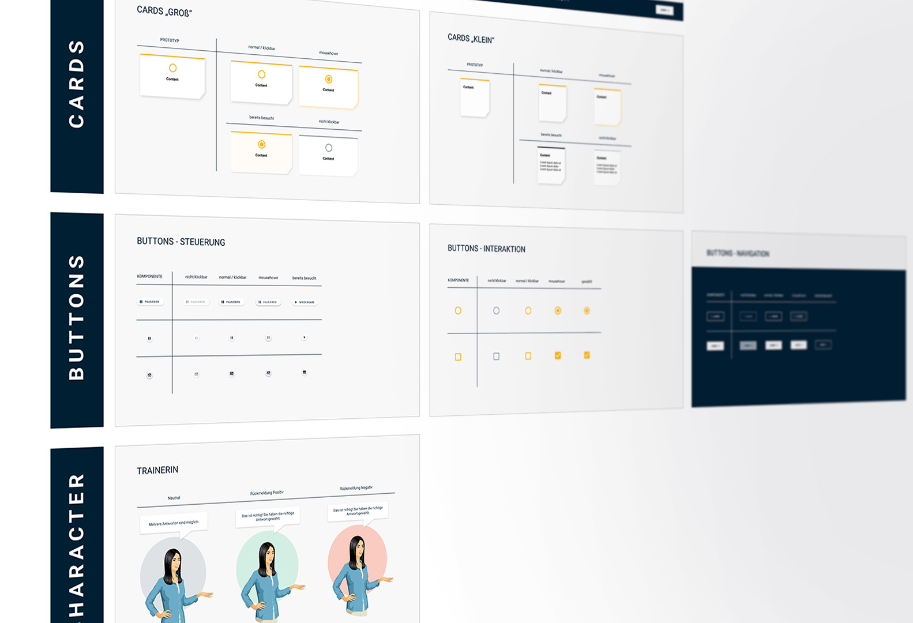
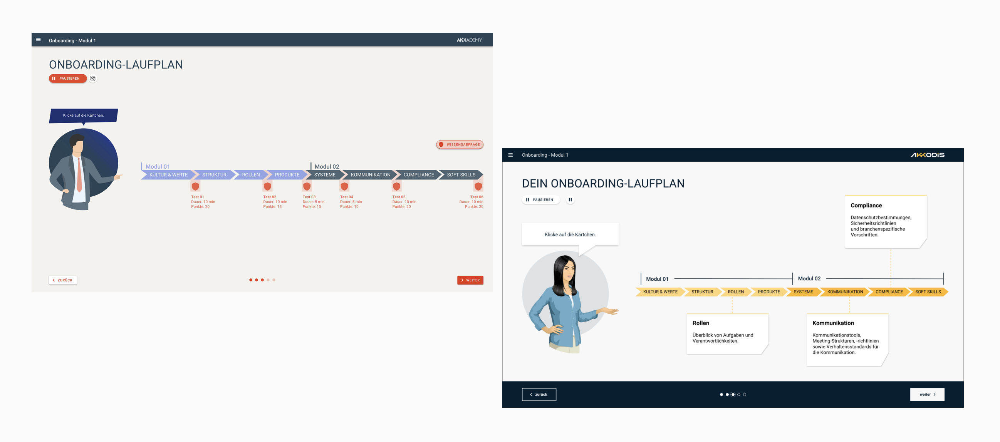

Redesigning Akkodis's internal learning platform after a company merger, aligning brand identity, improving usability, and rebuilding the component library.

After the merger of AKKA and Modis into Akkodis, the internal learning platform still reflected the old brand. Beyond a visual refresh, the platform needed a thorough usability review, as inconsistent components and unclear interface patterns were slowing down both learners and content creators.

I started with a comprehensive audit of the existing UI components, mapping each against the new brand guidelines and assessing usability quality. This created a clear picture of what needed to be replaced, refined, or rebuilt from scratch.

Based on the audit, I prioritised the component set needed for the platform's core learning and course-creation workflows. Clear naming conventions and layout rules were defined to ensure consistency going forward.

I rebuilt the component library in Figma, implementing the Akkodis corporate identity across all elements. A flexible grid system was introduced to ensure consistency across different player views and screen sizes.
The redesigned components were tested with internal stakeholders: both learners using the platform and content creators building courses. Feedback was gathered to refine edge cases and validate the new grid system under real content conditions.
The redesigned AKKAdemy platform offers a reduced, functional interface that puts learning content first. The new component library makes course creation faster and more consistent. The visual system supports clarity and cognitive focus, useful whether you're building a course or taking one.
The component library significantly improved efficiency and consistency in internal course development. It also served as a design foundation for future updates across other Akkodis platforms, demonstrating how a well-structured design system pays dividends beyond its initial scope.


.png)